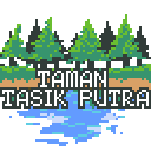

Video and FAQ
Interview
What do people do at Taman Tasik Putra? How has it benefited their lives? We've interviewed some visitors to gather their opinion.
Frequently Asked Questions
Q: What are the peak hours?
A: Friday to Sunday mornings, usually from 6 am to 8 am.
Q: Is there a schedule for events held in the park?
A: No. Come frequently and you can see what events are being held.